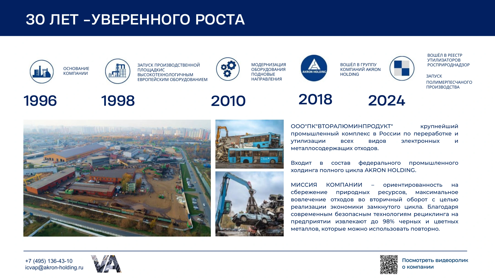
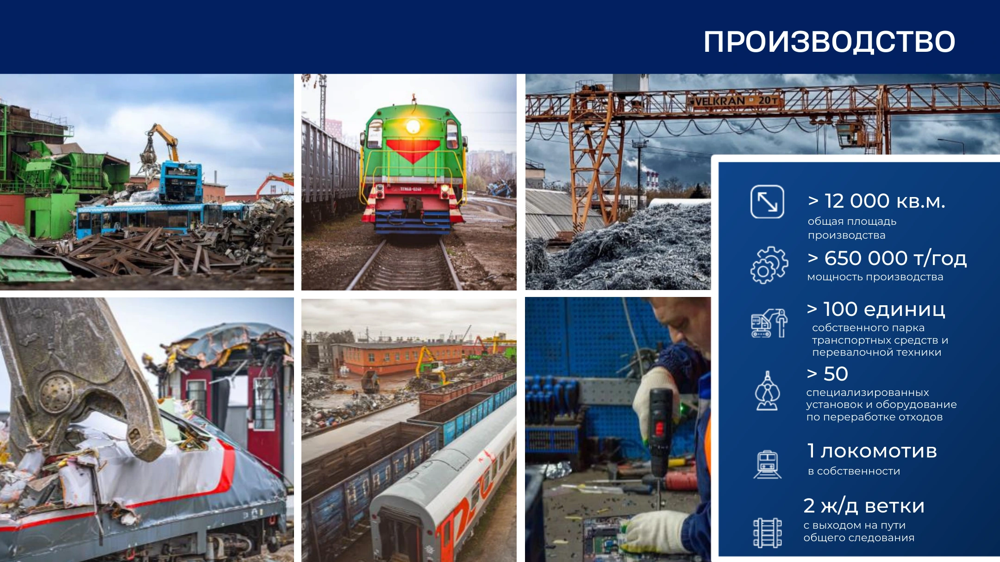
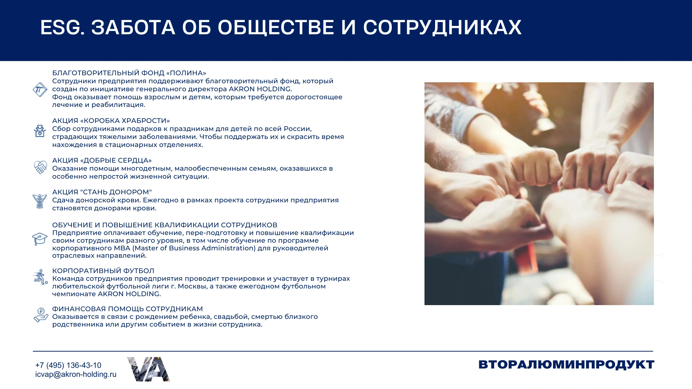

Ваш первый месяц
Отмечайте выполненные шаги. Отметки сохраняются в этом браузере.
Выполнено 0 из 9 шагов
Первая неделя
Первый месяц
О компании
«Вторалюминпродукт» работает с 1996 года. В 2018 году предприятие вошло в состав AKRON HOLDING. Комплекс собирает, вывозит и перерабатывает металлолом и электронные отходы, утилизирует технику и оборудование. Задача предприятия — сохранять природные ресурсы, возвращая материалы во вторичный оборот.
Более 12 000 м²Площадь производства
Более 650 000 т/годПроизводственная мощность
До 98%Металлов возвращается во вторичный оборот
Структура компании
Подчинённость и ответственные по отделам
Структура подчинённости
Генеральный директор
Напрямую подчиняются
- Главный бухгалтер
- Директор по персоналу
- Заместитель генерального директора по вопросам безопасности
- Заместитель генерального директора по вопросам самоходной техники
- Заместитель генерального директора по производственным вопросам
- Заместитель директора по коммерческим вопросам (3)
- Мастер участка
- Начальник лаборатории радиационного контроля
- Начальник ПЗУ
- Начальник производственного участка
- Начальник хозяйственного отдела
- Помощник руководителя
- Руководитель департамента по работе с ключевыми клиентами
- Руководитель отдела заготовки (2)
- Руководитель отдела маркетинга
- Руководитель отдела по охране труда
- Специалист отдела охраны труда и промышленной безопасности
- Финансовый директор
- Юрисконсульт
Отделы и ответственные
| Отдел или направление | Ответственный |
|---|---|
| Финансово-экономический отдел (ФЭО) | Соколов Михаил Алексеевич, финансовый директор |
| Отдел маркетинга | Михайлюк Елена Алексеевна |
| Отдел лома чёрных металлов (ЛЧМ) | Позняк Павел Сергеевич |
| Отдел лома цветных металлов (ЛЦМ) | Вешкин Сергей |
| Коммерческое направление | Зайцев Алексей Валериевич, коммерческий директор |
| Бухгалтерия | Лизачева, главный бухгалтер |
| Отдел утилизации | Брахнов Игорь Вячеславович |
| Отдел автотранспорта | Шпунтов Александр Александрович |
| Электротехническое направление | Куцый Сергей Владимирович |
| Юридическое направление | Коростелёва Ирина, юрист |
| Розничное направление | Халилов Владимир Александрович |
| Направление «Газпром» | Гарманов Игорь Игоревич |
| Лаборатория радиационного контроля (ЛРК) | Колесникова Юлия Геннадьевна |
| Охрана труда | Карасева Анна Альбертовна |
| Отдел персонала | Погожева Елена Евгеньевна |
Основные направления компании
Утилизация
Утилизация возвращает материалы из отходов в оборот. На примере оргтехники компания организует приём, вывоз и обработку оборудования. При переработке выделяют металлы, пластик и другие материалы. По согласованной услуге оформляют закрывающие документы.
Пример. Клиент списывает компьютеры. Уточните перечень, количество, место хранения, необходимость вывоза и комплект документов.
Какие сведения нужны для первичной оценки заявки?
Перечень техники, количество, адрес, условия погрузки и требования к документам.
РОП
Расширенная ответственность производителей (РОП) касается обращения с отходами от использования товаров и упаковки. Компания оказывает услуги по утилизации в рамках РОП. Применимость требований и условия проекта уточняет профильный специалист.
Пример. Производитель упаковки обращается за услугой по РОП. Запросите группу продукции или упаковки, отчётный период и объём.
Что уточнить до передачи обращения специалисту по РОП?
Группу продукции или упаковки, отчётный период и объём.
Демонтаж
Демонтаж — разборка или снятие оборудования и конструкций. Компания также выполняет разделку и вывоз металлолома. Объём работ зависит от объекта, условий на площадке и согласованного задания.
Пример. Клиент хочет разобрать металлоконструкцию. Запросите адрес, описание, фото и сведения о доступе для техники.
Чем демонтаж отличается от вывоза?
При демонтаже объект нужно разобрать. При вывозе готовый к погрузке материал нужно забрать и перевезти.
Авторециклинг
Авторециклинг — переработка транспорта, вышедшего из эксплуатации. Направление компании охватывает утилизацию транспорта и спецтехники. При разборке и сортировке из техники выделяют материалы для дальнейшей переработки.
Пример. Клиент хочет сдать списанный погрузчик. Уточните вид техники, состояние, возможность перемещения, адрес и потребность в вывозе.
Почему важно спросить, может ли техника двигаться?
От этого зависит, как организовать погрузку и перевозку.
ЭКОВАП и розница
ЭКОВАП — розничное направление по приёму вторсырья от населения. Пункты «Мегабак» помогают жителям сдавать раздельно собранные материалы. Условия приёма зависят от конкретного пункта и вида материала.
Пример. Посетитель хочет привезти пластик и старую технику. Уточните, какие именно материалы он сдаёт, и проверьте условия выбранного пункта.
Что проверить перед тем, как направить человека в пункт?
Адрес, режим работы, перечень материалов и условия приёма.
Формы адаптации
Заполните нужные поля и распечатайте формы или сохраните их в PDF через меню печати. Введённые данные остаются на открытой странице до её перезагрузки.
Чек-лист первого дня
План адаптации на 30 дней
Встреча с наставником
Итоги первого месяца
30 лет истории
Презентация о компании
История и миссия

Направления деятельности
Производственные мощности

Обучение и инициативы сотрудников
